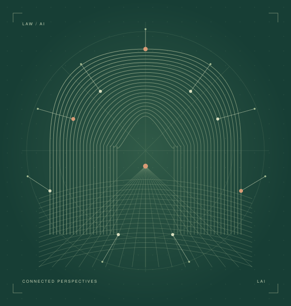

LEGAL AI INSTITUTE
Advancing
legal intelligence.
Bringing legal scholarship and artificial intelligence together to advance understanding, research, and access to justice.

01 / THE INSTITUTE
At the intersection
of law and AI.
A space for legal and computational perspectives to meet.
The Legal AI Institute connects scholarship, practical projects, and conversations about artificial intelligence and law. Our work brings people together to explore how AI can contribute to legal knowledge and how legal knowledge can inform AI.
Explore our scholarly exchange02 / ONGOING PROJECTS
Legal knowledge,
within reach.
Connecting people with the law
through public legal information.
03 / ORGANIZED EVENTS
Ideas move forward
in conversation.
ICML 2026 · SEOUL, SOUTH KOREA
AI for Law Workshop
Legal reasoning, AI evaluation, and access to justice.
Visit workshop website04 / OUR PEOPLE
A shared inquiry.
A growing community.
Bringing together perspectives
across law and artificial intelligence.
Co-Directors 01—02
CO-DIRECTOR
Prof. Benjamin
Minhao Chen
Faculty of Law
The University of Hong Kong
CO-DIRECTOR
Prof. Yu Fan
Faculty of Law
The University of Hong Kong
Advisory Board
Members to be announced.
Research Associates
Members to be announced.
Research Assistants
Members to be announced.